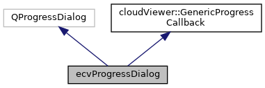

|
ACloudViewer
3.9.3
A Modern Library for 3D Data Processing
|
|
ACloudViewer
3.9.3
A Modern Library for 3D Data Processing
|
Graphical progress indicator (thread-safe) More...
#include <ecvProgressDialog.h>


Signals | |
| void | scheduleRefresh () |
| Schedules a call to refresh. More... | |
Public Member Functions | |
| ecvProgressDialog (bool cancelButton=false, QWidget *parent=0) | |
| Default constructor. More... | |
| virtual | ~ecvProgressDialog () |
| Destructor (virtual) More... | |
| virtual void | update (float percent) override |
| Notifies the algorithm progress. More... | |
| virtual void | setMethodTitle (const char *methodTitle) override |
| Notifies the algorithm title. More... | |
| virtual void | setInfo (const char *infoStr) override |
| Notifies some information about the ongoing process. More... | |
| virtual bool | isCancelRequested () override |
| Checks if the process should be canceled. More... | |
| virtual void | start () override |
| virtual void | stop () override |
| Notifies the fact that the process has ended. More... | |
| virtual void | setMethodTitle (QString methodTitle) |
| setMethodTitle with a QString as argument More... | |
| virtual void | setInfo (QString infoStr) |
| setInfo with a QString as argument More... | |
 Public Member Functions inherited from cloudViewer::GenericProgressCallback Public Member Functions inherited from cloudViewer::GenericProgressCallback | |
| virtual | ~GenericProgressCallback ()=default |
| Default destructor. More... | |
| virtual bool | textCanBeEdited () const |
| Returns whether the dialog title and info can be updated or not. More... | |
Protected Slots | |
| void | refresh () |
| Refreshes the progress. More... | |
Protected Attributes | |
| QAtomicInt | m_currentValue |
| Current progress value (percent) More... | |
| QAtomicInt | m_lastRefreshValue |
| Last displayed progress value (percent) More... | |
Graphical progress indicator (thread-safe)
Implements the GenericProgressCallback interface, in order to be passed to the cloudViewer algorithms (check the cloudViewer documentation for more information about the inherited methods).
Definition at line 27 of file ecvProgressDialog.h.
| ecvProgressDialog::ecvProgressDialog | ( | bool | cancelButton = false, |
| QWidget * | parent = 0 |
||
| ) |
Default constructor.
By default, a cancel button is always displayed on the progress interface. It is only possible to activate or deactivate this button. Sadly, the fact that this button is activated doesn't mean it will be possible to stop the ongoing process: it depends only on the client algorithm implementation.
| cancelButton | activates or deactivates the cancel button |
| parent | parent widget |
|
inlinevirtual |
Destructor (virtual)
Definition at line 45 of file ecvProgressDialog.h.
|
inlineoverridevirtual |
Checks if the process should be canceled.
This method is called by some process from time to time to know if it should halt before its normal ending. This is a way for the client application to cancel an ongoing process (but it won't work with all algorithms). Process results may be incomplete/void. The cancel requirement mechanism must be implemented (typically a simple "cancel()" method that will be called by the client application).
Implements cloudViewer::GenericProgressCallback.
Definition at line 55 of file ecvProgressDialog.h.
Referenced by ccCompass::estimateP21(), ccCompass::estimateStrain(), ccCompass::estimateStructureNormals(), and LasIOFilter::loadFile().
|
protectedslot |
Refreshes the progress.
Should only be called in the main Qt thread! This slot is automatically called by 'update' (in Qt::QueuedConnection mode).
|
signal |
Schedules a call to refresh.
|
inlineoverridevirtual |
Notifies some information about the ongoing process.
The notification is sent by the ongoing algorithm (on the library side).
| infoStr | some textual information about the ongoing process |
Implements cloudViewer::GenericProgressCallback.
Definition at line 52 of file ecvProgressDialog.h.
References cloudViewer::GenericProgressCallback::setInfo().
Referenced by qCanupoProcess::Classify(), qM3C2Process::Compute(), qVoxFallProcess::Compute(), DistanceMapGenerationTool::ComputeRadialDist(), qFacets::createFacets(), define_ccProgressDialog(), ccCompass::estimateP21(), ccCompass::estimateStrain(), ccCompass::estimateStructureNormals(), StereogramWidget::init(), LasIOFilter::loadFile(), RDBFilter::loadFile(), LasIOFilter::saveToFile(), TileLasReader(), qCanupoTools::TrainClassifier(), and ccCompass::tryLoading().
|
virtual |
setInfo with a QString as argument
|
inlineoverridevirtual |
Notifies the algorithm title.
The notification is sent by the ongoing algorithm (on the library side).
| methodTitle | the algorithm title |
Implements cloudViewer::GenericProgressCallback.
Definition at line 49 of file ecvProgressDialog.h.
References cloudViewer::GenericProgressCallback::setMethodTitle().
Referenced by qCanupoProcess::Classify(), qM3C2Process::Compute(), qVoxFallProcess::Compute(), DistanceMapGenerationTool::ComputeRadialDist(), qFacets::createFacets(), define_ccProgressDialog(), ccCompass::estimateP21(), ccCompass::estimateStrain(), ccCompass::estimateStructureNormals(), StereogramWidget::init(), LasIOFilter::loadFile(), RDBFilter::loadFile(), LasIOFilter::saveToFile(), TileLasReader(), ccCompass::tryLoading(), and G3Point::G3PointAction::wolman().
|
virtual |
setMethodTitle with a QString as argument
|
overridevirtual |
Notifies the fact that every information has been sent and that the process begins Once start() is called, the progress bar and other informations could be displayed (for example).
Implements cloudViewer::GenericProgressCallback.
Referenced by qCanupoProcess::Classify(), qM3C2Process::Compute(), qVoxFallProcess::Compute(), DistanceMapGenerationTool::ComputeRadialDist(), ccCompass::estimateP21(), ccCompass::estimateStrain(), ccCompass::estimateStructureNormals(), StereogramWidget::init(), LasIOFilter::loadFile(), RDBFilter::loadFile(), LasIOFilter::saveToFile(), TileLasReader(), and ccCompass::tryLoading().
|
overridevirtual |
Notifies the fact that the process has ended.
Once end() is called, the progress bar and other informations could be hidden (for example).
Implements cloudViewer::GenericProgressCallback.
Referenced by ccCompass::estimateStructureNormals(), and StereogramWidget::init().
|
overridevirtual |
Notifies the algorithm progress.
The notification is sent by the running algorithm (on the library side). This virtual method shouldn't be called too often, as the real process behind it is unspecified and may be time consuming. Ideally it shouldn't be called more than a few hundreds time.
| percent | current progress, between 0.0 and 100.0 |
Implements cloudViewer::GenericProgressCallback.
Referenced by qVoxFallProcess::Compute(), ccCompass::estimateP21(), ccCompass::estimateStrain(), and ccCompass::estimateStructureNormals().
|
protected |
Current progress value (percent)
Definition at line 80 of file ecvProgressDialog.h.
|
protected |
Last displayed progress value (percent)
Definition at line 83 of file ecvProgressDialog.h.